10.3. VRoid/VRM
The main feature of this app is that you can read and take poses by reading VRoid/VRM, and you can enjoy the animation described below. I will explain a series of operations from reading VRM files to actual operation.
Caution
In this app, VRM1.0 models can also be read normally.
However, the functions that have been newly implemented in VRM1.0, such as constraints, have not yet been confirmed because the usage examples have not yet spread. We will proceed with confirmation and response in future updates.
10.3.1. Check the usage conditions of VRM
As the reading proceeds, the VRoid/VRM usage conditions confirmation screen will be displayed. If you read the VRM file of the creator other than yourself, check the terms of use and accept the” OK “button to complete the loading. please give me.
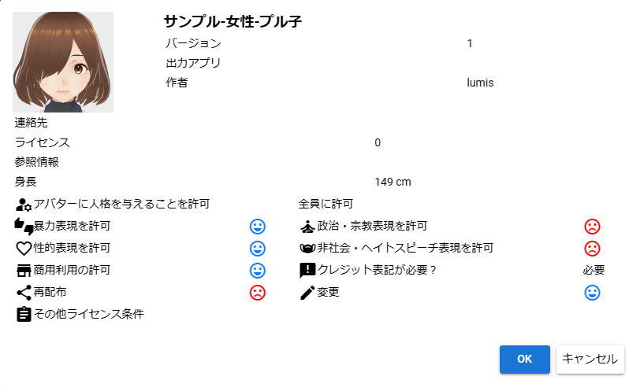After this, the desired VRoid/VRM will be displayed on the WebGL screen.
Note
If you open VRM from history, you can skip this confirmation screen depending on your options.
VRoidStudio 1.x model and 0.x model have different joint shapes and initial poses. This app absorbs the difference as much as possible, but the initial display of IK in 11 and 13 on the next page will be slightly off in the model immediately after output from VRoidStudio 1.x (there is no problem if you start moving).
VRM 0.x models and VRM 1.x models also have different joint shapes, so the initial poses are slightly different. There is no problem if you start moving this as well.
10.3.2. Working with VRM IK markers
The imported VRoid/VRM has a semi-transparent figure called an IK marker as shown in the figure. Each part is linked to the movement of the next part. In addition, the type and shape of IK marker operations are determined for each part.
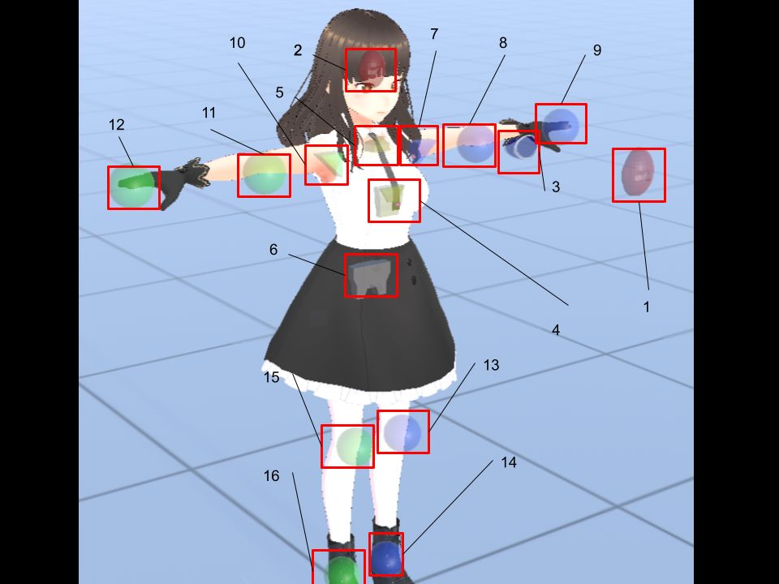No |
Part |
Corresponding operation |
No |
Part |
Corresponding operation |
|
|---|---|---|---|---|---|---|
1 |
EyeViewHandle |
move |
2 |
Left/right tilt of the head / protruding chin (Head) |
rotation |
|
3 |
Head orientation (LookAt) |
move |
4 |
Upper Body Orientation (Aim) |
rotation |
|
5 |
Left and right inclination of the upper body and shoulders (Chest) |
rotation |
6 |
Waist direction/tilt/movement (Pelvis) |
Move/Rotate |
|
7 |
Left shoulder |
rotation |
8 |
Left elbow (LeftLowerArm) |
move |
|
9 |
Left Hand |
Move/Rotate |
||||
10 |
Right shoulder（RightShoulder） |
rotation |
11 |
Right elbow (RightLowerArm) |
move |
|
12 |
Right hand（RightHand） |
Move/Rotate |
||||
13 |
Left foot direction (LeftLowerLeg) != Knee |
move |
14 |
Left ankle (LeftLeg) |
Move/Rotate |
|
15 |
Right leg direction (RightLowerLeg) != knee |
move |
16 |
Right ankle (RightLeg) |
Move/Rotate |
Warning
IK system changes (ver 2.2.0)
In Ver 2.2.0, we changed the IK system from FinalIK to Unity’s original IK for future versatility. The impact of this is as follows.
Aim now operates the corresponding part of the VRM by rotating instead of moving.
Chests now operate the corresponding part of the VRM by rotating instead of moving them.
If you have greatly manipulated these IK markers in the previous pose/motion file, you will need to change the pose/motion. note that.
Note
Even if you perform an operation that is not supported, there is no movement in that part.
This is the only part that can be manipulated so that you can edit the pose as freely as possible without being complicated and troublesome. Therefore, it does not support FK (Forward Kinematics), which requires a huge number of operations.
There may be a strict way of saying this in the world, but in this app, each bone (part) above is described as an IK marker (part).
13 and 15 are not synonymous with knees. Think of it as the overall direction of your foot.
In order to support VR/AR, the shapes of IK markers 1, 2, 5, and 6 have been changed from ver 2.3.0.
10.3.2.1. Operation of each IK marker
Click each selected IK marker as shown. This is the operating handle.
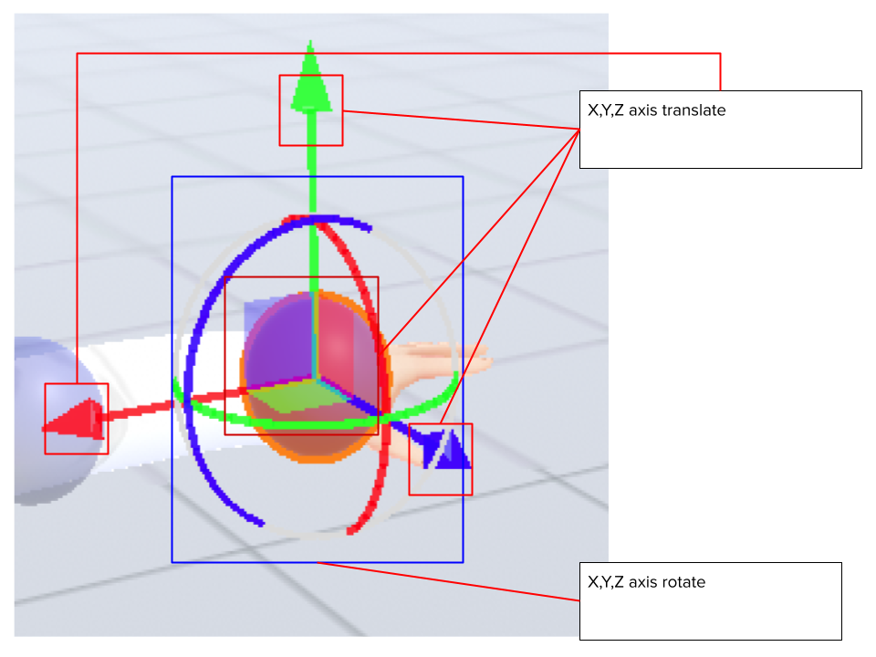- X, Y, Z axis movement
With green = Y, blue = Z, and red = X axis, dragging will move the IK marker in that direction. The corresponding part of the body also moves by the amount of movement.
- center plane
The square box in the middle with the same color can be moved freely on the axis indicated by the surface and the other axis by dragging inside it.
10.3.2.2. special operation
With an IK marker selected, you can use special functions by pressing the following keys:
- Ctrl-click IK marker
Multiple IK markers can be selected. You can move multiple body parts at the same time by moving or rotating with multiple selected. In addition, since the operation handle also has a collision detection, please select only the IK marker by zooming the camera.
- Press X key
Switch between global coordinates and local coordinates. Default is local coordinates.
- press G key
Move IK markers only.
- Press R key
Set the IK marker to rotation only.
- Press the T key
Returns the IK markers to their initial state. (Both movement and rotation)
- Press Shift + Z
Undo movement/rotation by IK marker.
- Press Shift + Y
Redo movement and rotation with IK markers.
10.3.2.3. Movement/rotation of VRoid/VRM itself
To move/rotate the selected VRoid/VRM itself, turn on “Movement mode” in the “IK, whole body” tab of the property on the right.

Then, when you click near the feet of the VRoid/VRM, all IK markers will be selected. Although it is not displayed, this is actually the entire IK marker.
Warning
Since the ankle and the overall IK marker tend to interfere, please switch to OFF when not moving.
If you move or rotate up, down, left, or right in this state, the VRoid/VRM itself will move accordingly. This can also be set numerically from the “Common” tab of the properties.

You can also adjust the overall size of the VRoid/VRM from the common tab, but the ideal size of the VRoid/VRM is the size at the time of loading. We recommend that you do not change this ratio too drastically. (Because it does not follow the size of the IK marker itself, the position of the IK marker and the body part will be misaligned.)
10.3.2.4. Return all bones to T pose
If you mess with the IK markers too much and can’t return to the desired pose, you can return to the T pose (default pose) by pressing Reset all bones on the 3D model tab of the ribbon bar.

You can also reset the overall position and rotation with Reset Position and Reset Rotation.
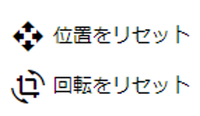10.3.2.5. Numerical manipulation of IK markers
In addition to manipulating IK markers with a mouse or touch, you can also manipulate them by entering actual numbers. Select the desired VRoid/VRM, and press the “IK position batch change” button on the “IK, whole body” tab of the properties on the right.
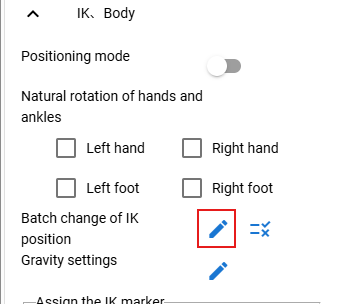
The function of each button is as follows.
 Refresh
RefreshReflects the pose information of the currently selected VRM in the spreadsheet. Basically, if you select it, it will be automatically reflected, but the information may remain old depending on the operating state of the application. Use it in that case.
- ポーズを反転する
Swap the left and right of the current pose information. Press ** pose ** in this state will result in the current pose in reversal.
Note
The buttons in the toolbar will be disabled while selecting anything other than VRM.
The number here is the current value of VRM. Since the height and physique difference are not reflected, it is necessary to manually calculate when reused with other VRM.
10.3.2.6. Adjust the restrictions of the movable range
- Lowerleg, the rotation angle of the X -axis of the ankle (Leg), the rotation angle of the elbow of the elbow (LowerArm)
The range of the rotation of the ankle, below the knees, the range of the ankle rotation is limited according to the actual human body.
It can be turned on/off by selecting “Model tab” → “Apply natural movement control to VRM’s body” on the setting screen.
- Rotation of the X -axis of the ankle (Leg) after moving the direction of the foot
When the legs (LowerLeg) are moved back and forth, rotate the rotation angle of the ankle (Leg) according to LowerLeg.
It can be turned on/off by selecting “Model tab” → “Automatic ankle rotation” on the setting screen.
10.3.2.7. Interlocking between IK markers
- The following 3 patterns linked
- Near shoulder (chest) / arm (Lowerarm) / head (head)
When the chest is moved, move the X -axis of the arm (Lowerarm), the head (head), and the Z axis as much as possible.
- Aim and shoulder (Chest)
When the AIM is moved, the X -axis / Z axis near the shoulder (Chest) is moved as much as possible.
- Pelvis and legs (LowerLeg)
When the waist goes up and down, the legs move slightly back and forth according to their movements.
- Interlocks between the ankle (LEG) and the direction of the foot
Lowerleg slightly moves back and forth when you move your ankle
- Interlocking Hand and Lower Arm
When moving the hand, the arm (elbow) also moves
Hint
It can be turned on/off by selecting “Model tab” → “Bone linkage” on the setting screen.
Warning
The interlocking problem that was present at the time of ver 1.x has been solved in Ver 2.0.2.
It turns off automatically during animation playback, and the position and rotation registered in the keyframe are reflected.
If you turn it off, it will not be linked and you will be free, but the joint will bend in a direction that should not be bent.
10.3.2.8. Switch IK markers to different objects
Select an IK marker site and select an object to assign to that site. Selectable objects are:
Note
Caution
Each VRM’s IK automatically reverts to default if you delete the object you’re assigning it to.
** VRM A and VRM B, and when effect objects **
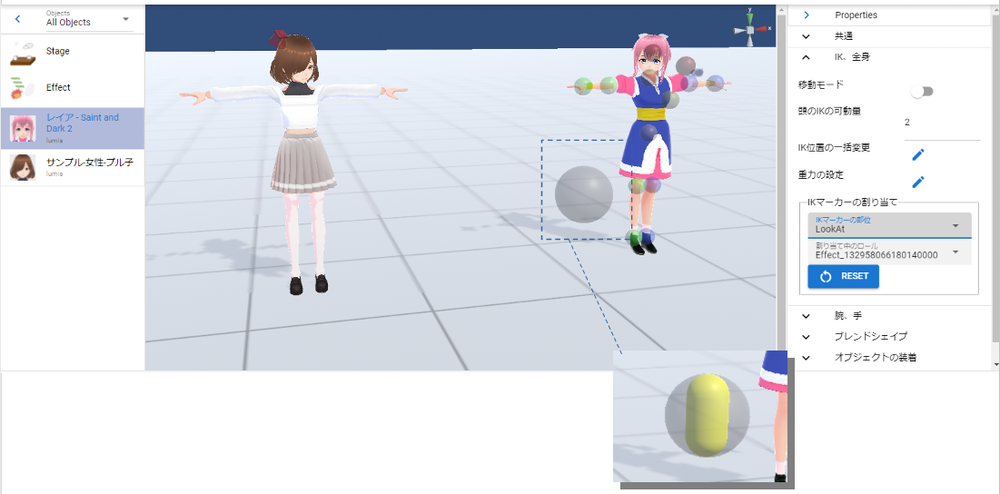If you move the effect object in this state, the character A and B will turn around in that direction and look at them.
This setting and state can be reflected in the animation. Registering in the animation project is the following:
Object |
Operations to register |
|---|---|
VRM |
IK marker assignment |
Assigned object |
Actual movement, rotation, etc. |
10.3.3. Operation of hand poses
To operate the palms, open the “Arms/Hands” tab from the properties on the right and select the pose you like for the left and right hands.
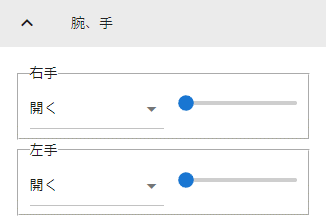You can adjust the degree of pose with the slider. More hand poses will be added in future updates.
- Ver 1.0.0:
Generally
Open
Close
Point
V-sign
Thumbs up
Grasp
- From Ver 1.0.4, the following has been supported.
Manual operation

 thumb to pinky joints
thumb to pinky jointsEach slider rotates a knuckle. The top is the 1st joint to the 2nd joint, and the bottom is the 3rd joint.
 Operation of the finger itself (between fingers, rotation of finger axis)
Operation of the finger itself (between fingers, rotation of finger axis)- The red slider adjusts the degree of opening between the fingers with the slider.The green slider rotates around the finger axis. (It’s not possible as a real human, but it’s a rotation operation that is often necessary with 3D models.)
- 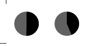 Base of thumb
You can adjust the rotation of the base of the thumb with a circular slider. The left represents the perspective distance between the thumb and the palm, and the right mainly represents left-right rotation.
10.3.4. BlendShape
To put it simply, you can switch the facial expressions of VRoid/VRM. Open the “Blendshape” tab of the property on the right, and adjust the value of your favorite blendshape with the slider.
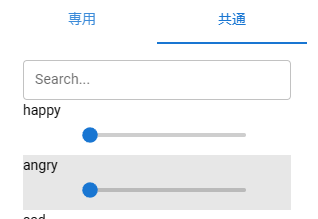Blend shapes are determined for each VRM file, and the number that can be manipulated varies depending on the character.
Move the slider next to each shape key between 0 and 100.
- Search
You can incrementally search by blendshape name. If blank, all blendshapes will be displayed.
- Dedicated and common blendshapes
- Exclusive:
Each VRM has its own shape. Even if the shape here is made into a motion or pose file described later and applied to another VRM, it may not be reproduced.
- Common:
It is a shape common to all, regardless of whether it is a VRM1.0 model or a migration model from VRM0.x. The shapes here can be reproduced in other VRMs by putting them in a motion or pose file.
The name has been changed to support VRM1.x.
Due to the VRM 1.0 specification, the behavior of SkinnedMeshRenderer’s blend shapes has been affected, and some
general-purposeshapes that used SkinnedMeshRenderer in this application no longer work. This application maintains compatibility and can be used, but since it may cause confusion, we have changed the name as follows.This app version
The shape of the SkinnedMeshRenderer
The shape of the Expression
Ver 2.0
Exclusive
Common
Ver 1.x
Generally
Exclusive
Caution
Note that
privateis reversed .Note
The original Expression only has the bare minimum of common shapes for all VRMs.
There is a possibility that the number of Expressions in other apps is small, but that is the standard state. This application emphasizes compatibility, so we have made it possible to use all blendshapes as Expressions with our own improvements.
10.3.4.1. Automatic blink
Auto blink keeps VRM blinking at the specified timing.
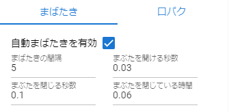It keeps moving independently of the animation keyframes, so you don’t have to incorporate the opening and closing of the eyes into the keyframes from scratch with blendshapes.
- Blink interval, number of seconds the eyelids open, number of seconds closed, number of seconds closed
By specifying each of them, you can feel the expression even with the movement of the eyes.
It is on by default. If you don’t need it, uncheck “Enable automatic blink” to turn it off.
Caution
Competes with the eye blendshape. We recommend that you use one or the other.
10.3.5. wearing an object
You can link different objects such as FBX, Obj, Light, etc. to specific body parts of VRoid/VRM and link their movements. Open the “Attach Objects” tab in the properties on the right.
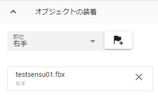Add another object in advance.
Note
Adjust the position and rotation according to the part of the body you want to tie.
Select VRoid/VRM, select the target body part, and click the Add button.

Select the object you want to link and press the “OK” button.
Wearable objects are:
Object type |
|---|
3D objects such as FBX / OBJ |
Image |
Light |
Camera |
Effect |
Information about the attached object will be displayed.

Caution
About wearing objects in animation projects
- Example:
Equip a 3D sword object on the VRM’s right hand
Frame |
VRM |
Other objects |
|---|---|---|
1 |
move the right hand to the desired position |
Move the sword to the specified position |
2 |
wear a sword object to the right hand |
None |
~ |
None |
|
9 |
move the right hand |
None |
10 |
Release the sword attached to the right hand |
Register the position and rotation at this time to the key frame |
Other object properties cannot be changed between 2 and 10 frames.
The point in the animation is that the wearing state is the same at the start and end. For example, if the 1st frame is without attachments and the 10th frame is with attachments, if you operate the frame or press the play button again, the position of the object may gradually shift.
10.3.6. gravity settings
Even with this app, hair flutters when the VRoid/VRM moves, but you can make fine adjustments manually.
Although this is an effect only for this application, for example, you can correct the phenomenon that the skirt is turned up too much by setting this gravity.
Warning
Conflicts with the stage wind effects and settings described below. Do not use this feature when using wind.

Information on the gravity settings of bones owned by the VRM being operated is listed on the spreadsheet. The bones displayed here are:
Bones that the VRM itself has (already held during creation in VRoidStudio)
Bones held by 3D models retrofitted to VRM with tools such as the Unity editor and my work VRMOneEditor
In addition, since it should have gone through conversion with UniVRM once, it depends on the VRMSpringBone component for bone information.
Please check in advance on VRoidStudio or Unity which bones are actually located. The cells that can be changed are:
Power |
Direct strength of gravity on that bone (0 to 1) |
Direction X / Y / Z |
Directional strength of gravity on that bone (-1 to 1) |
Note
-1 for each Direction is the negative direction. For example, the Y axis will be downward. (1 means up)
Power * Directionreflects how the bones flutter due to gravity.To reload the latest information, press the load button on the toolbar.
10.3.7. Texture
You can change the settings of textures held by VRM in detail. The setting and usage of OtherObject are exactly the same.
See Texture for details.